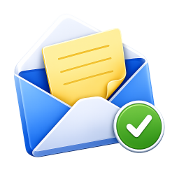

Wenn die Mail noch existiert, suchen Sie sie in Outlook und öffnen Sie sie in einem eigenen Fenster; MailNotes aktualisiert die Zuordnung dann automatisch. Wenn die Mail tatsächlich gelöscht wurde, können Sie den zugehörigen MailNotes-Eintrag nach Bestätigung löschen.